Dokumentation
Research
Benchmarkanalyse
In einer Studie von HealthOnQu.3 wurden mehrere Schmerz-Apps untersucht. Das Fazit aus dieser Studie ist, dass keine der untersuchten Apps ein umfassendes individualisiertes Hilfsangebot bietet. Die Suche nach qualifizierten Schmerztherapeut:innen wurde bei diesen Apps offensichtlich komplett weggelassen. Zudem wird bemängelt, dass die Patient:innen keine Möglichkeiten haben, die zum Teil langen Wartezeiten auf einen Arzttermin mit Schmerzlinderungs-Übungen, die auf ihre Symptomatik zugeschnitten sind, zu überbrücken.Qu.3
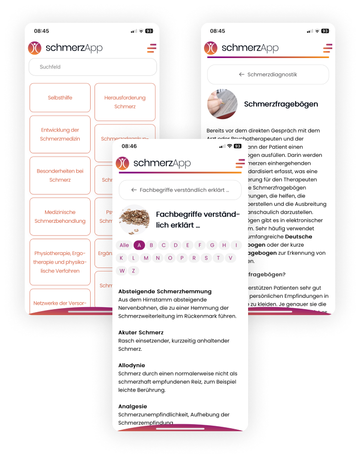
schmerzApp
Eine App der deutschen Schmerzgesellschaft. Sie soll Laien die Möglichkeit bieten, sich über das Thema Schmerzen mit ihren unterschiedlichen Aspekten von Schmerz, Schmerzerkrankungen und Schmerztherapien zu informieren.
Pro
Kontra
-
Nicht übersichtlich, keine Navigation mit Hauptmenüpunkten
-
Zu viele Informationen auf einmal
-
Schwierig zu filtern, da Suchfunktion
nur mässig funktioniert
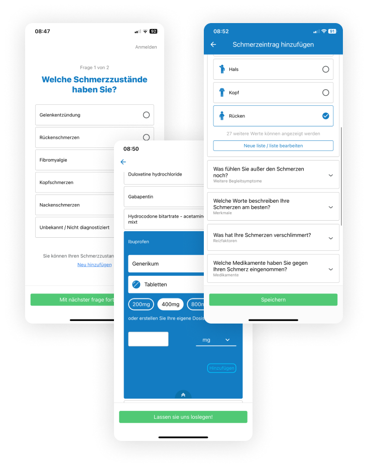
Manage My Pain
Diese App soll Schmerzpatient:innen die Möglichkeit geben, ihre Schmerzen aufzuzeichnen und zu analysieren.
Pro
Kontra
-
Statistiken nicht wirklich aussagekräftig,
was sollen sie den Patient:innen helfen?
-
Tracking für Medikamente hat sehr wenig Auswahlmöglichkeiten
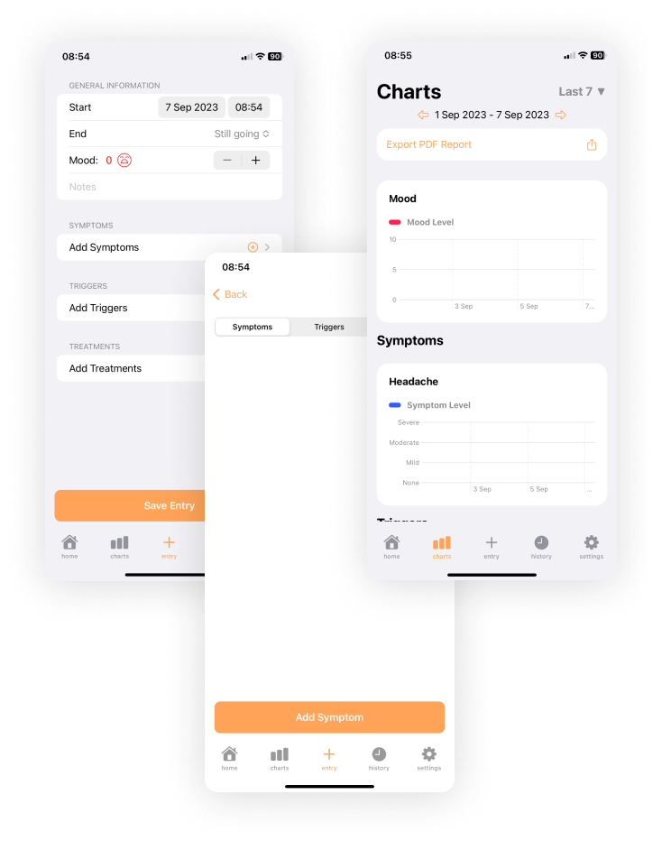
Symptom & Mood
App um Schmerzen zu tracken und zu verfolgen
Pro
Kontra
-
Dient nur zum Aufzeichnen von Schmerzen und um zu analysieren wie sich die Schmerzen in den Tagen verändert haben.
-
Sehr wenig Funktionen
-
Kein relevanter Nutzen für Schmerzpatienten, da keine Hilfe sondern mehr wie ein Schmerztagebuch
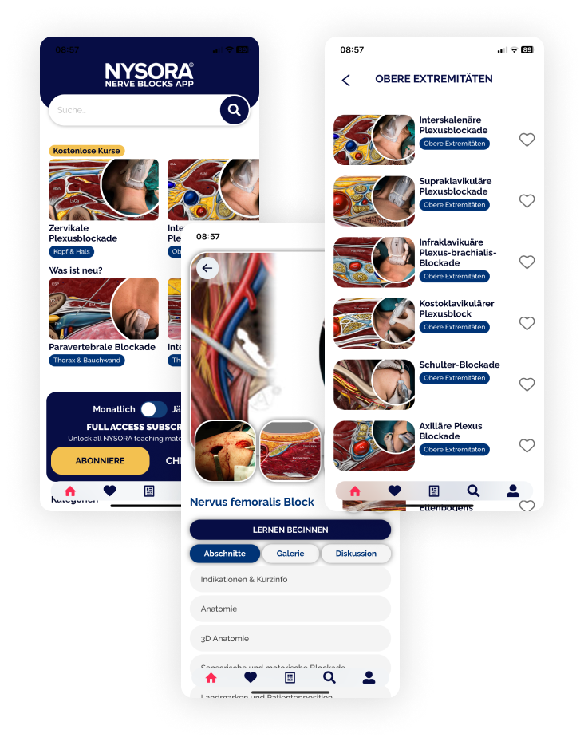
Nerve Blocks
Soll über Schmerzen informieren
Pro
Kontra
-
Zu fachspezifisch
-
Zu komplex für Laien auch von der Bildwelt her
-
Dient vermutlich mehr als Lernapp für Medizinstudent:innen
-
Schlechte Übersicht auf der Homeseite, unklar welche Inhalte in der App zu finden sind
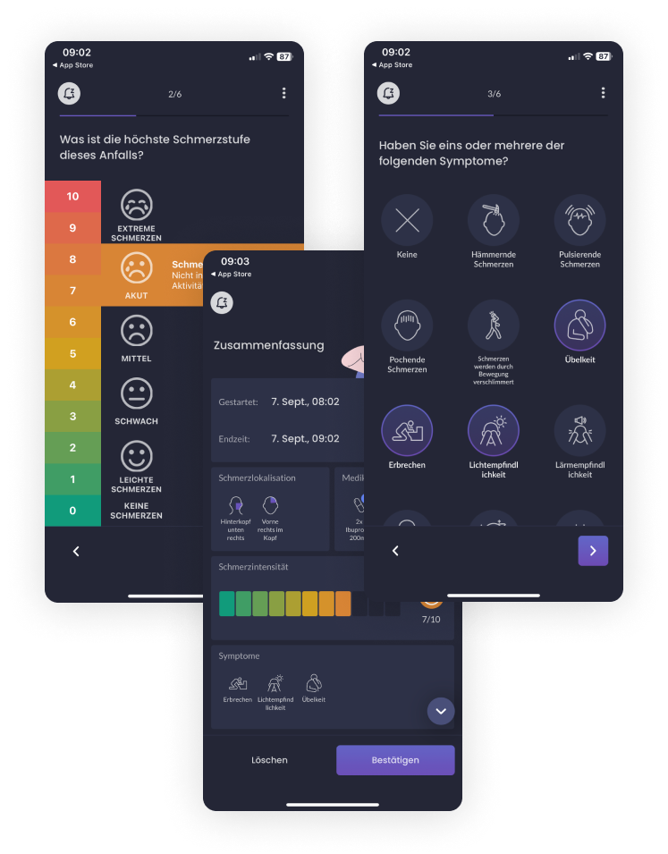
Migraine Buddy
Die App soll helfen, Muster der Migräneattacken zu entschlüsseln. Die App hat zudem eine Funktion, um die Attacken für ärztliche Fachpersonen zu exportieren.
Pro
Kontra
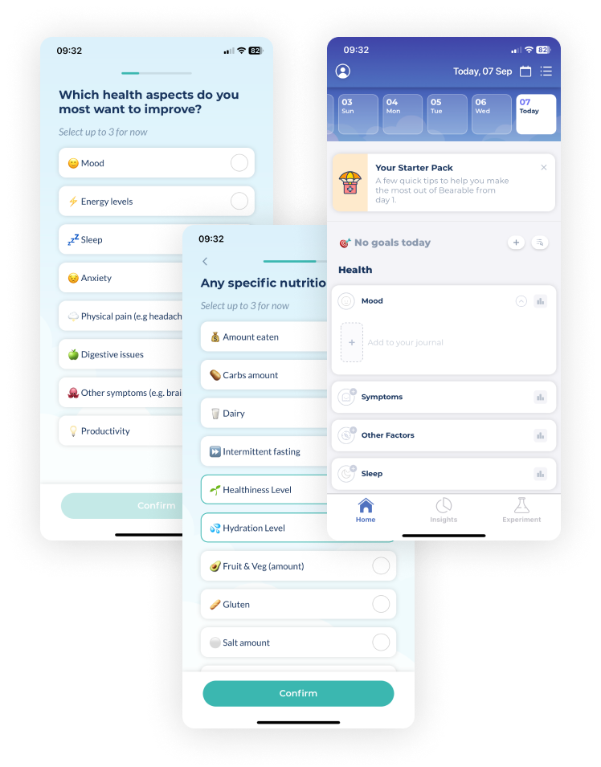
Bearable
Die Stimmung und Schmerzen können getrackt werden. Zudem kann die App gekoppelt werden mit andern Health Apps. Dient als Schmerztagebuch.
Pro
Kontra
-
Erfassen von Aktivitäten etwas umständlich
-
Pro Version hätte noch mehr Funktionen, Light Version ist sehr beschränkt
-
Nach ausfüllen der Parameter finde ich die App sehr unübersichtlich
Fazit Benchmarkanalyse
Da für mich von Anfang an klar war, dass ich eine App entwickeln möchte, um Schmerzpatient:innen das Leben zu erleichtern, analysierte ich hauptsächlich bereits bestehende Schmerztagebücher und Apps.
Es existieren bereits einige Apps in Zusammenhang mit Schmerzen auf dem Markt, jedoch sind alle meiner Meinung nach entweder sehr unübersichtlich, haben nur sehr wenig Möglichkeiten oder sind einfach sehr veraltet im Design.
Nach meiner Benchmarkanalyse bin ich der Auffassung, dass es aktuell keine App auf dem Markt gibt, die Schmerzpatient:innen ganzheitlich unterstützt.
Damit meine ich eine App, in welcher die Schmerzpatient:innen vom Finden von ärztlichen Fachpersonen, bis hin zu Erinnerungen für ihren Schmerztagebuch-Eintrag alles in Einem finden können.
Erkenntnisse aus der Benchmarkanalyse
Schlechte Übersicht bei den meisten Apps und dennoch nur wenige Funktionen wie z.B. Schmerztagebücher.
Sehr viele Statistiken die den Betroffenen so nicht direkt helfen, sondern mehr als Analyse ihrer Schmerzen über einen Zeitraum dienen.
Informations-Apps sind zu umfassend für Laien und schrecken mehr ab, als dass die Betroffenen sich informieren wollen.
Die meisten Apps sind einfach Schmerztagebücher, die nur den Zweck haben, die Schmerzen aufzuzeichnen, jedoch keinen weiteren Nutzen aufweisen.
Keine Art der Kommunikation mit Spezialisten, geschweige denn Spezialistensuche.
Keine der untersuchten Apps hat eine Funktion zur Kontaktaufnahme mit anderen Betroffenen.
Ideenfindung
Mit einer Mindmap ordnete ich meine Gedanken und erste Ideen für Kategorien der App.
Zur Mindmap
User Interviews
Ich konnte mit zwei Personen Interviews durchführen, welche von chronischen Schmerzen betroffen sind oder es lange Zeit waren. So konnte ich meine vorherigen Erkenntnisse bestätigen oder auch überarbeiten. Zudem habe ich ein kleines Experiment mit ChatGPT durchgeführt, welcher sich als Interviewpartner Daniel in einen Schmerzpatienten hineinversetzen sollte. Auch aus diesem fiktiven Interview konnte ich einige Aspekte mitnehmen und diese in mein Konzept integrieren.
Fazit der Interviews
Die meisten Funtionen der App, die angedacht waren, fanden Anklang. Einzig die Kategorie mit den Informationen würden die Interviewpartner:innen weglassen. Eine Community mit anderen Betroffenen würden sie sehr begrüssen, jedoch nur, wenn man die Community irgendwie nach Schmerzsymptomen und Körperbereichen filtern kann. Ein Chat mit Schmerzspezialisten wurde angebracht, was ich ein sehr guter Punkt finde, um diesen noch aufzugreifen. Zudem würden die Interviewpartner:innen eine Art Medikamententracking in der App praktisch finden, sowie auch tägliche Erinnerungen für ihre Übungen oder Termine.
Konzeption
Zielgruppe
Eine Zielgruppe sollte als Grundlage dienen für meine Zielgruppen-Personen. So war es einfacher zu definieren, wen ich mit meiner App ansprechen will.
Die Schmerzsymptome der Patient:innen, die durch die App angesprochen werden sollen, reicht von chronischen Rückenschmerzen bis hin zu starken Schmerzpatient:innen z. B. in der Krebstherapie.
Demografische Merkmale
Alter: 18–50 Jahre
Wohnort: Stadt & Land
Geschlecht: alle
Familienstand: alle
Sozioökonomische Merkmale
Bildungsstand: jedes Bildungsniveau
Einkommen: jede Einkommensklasse
Psychografische Merkmale
Schmerzbewältigung, Gesundheitsbewusstsein, Motivation zur Selbsthilfe, Ziele und Lebensqualität steigern, Suche nach Spezialist:innen
Benutzerprofil
Mit zwei Benutzerprofilen habe ich die Pains, Gains und Jobs der Zielgruppe konkretisiert. Hierzu habe ich einmal ein Profil eine/r jüngeren Benutzer:in und einmal einer älteren Person erstellt. Aus diesen Benutzerpofilen habe ich die Zielgruppen-Personen dann erstellt.
Benutzerprofil 1
Leiden schon lange unter Schmerzen, suchen nach Lösungen. Haben bis jetzt keine Lösung gefunden, die für sie funktioniert und alle Funktionen bieten, die sie benötigen. Eher jüngere Personen.
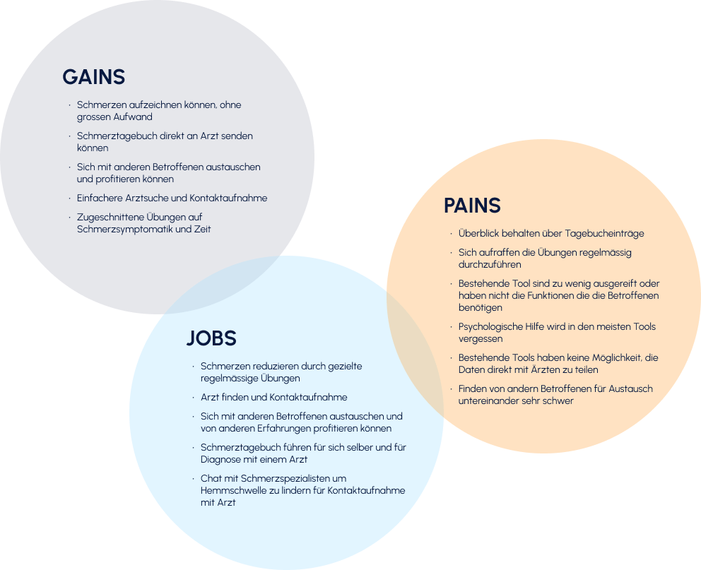
Benutzerprofil 2
Leiden schon lange unter Schmerzen, suchen nach Lösungen. Haben bis jetzt keine Lösung gefunden, die für sie funktioniert. Sei es als App oder mit dem Gang zur ärztlichen Fachperson. Eher ältere Personen.
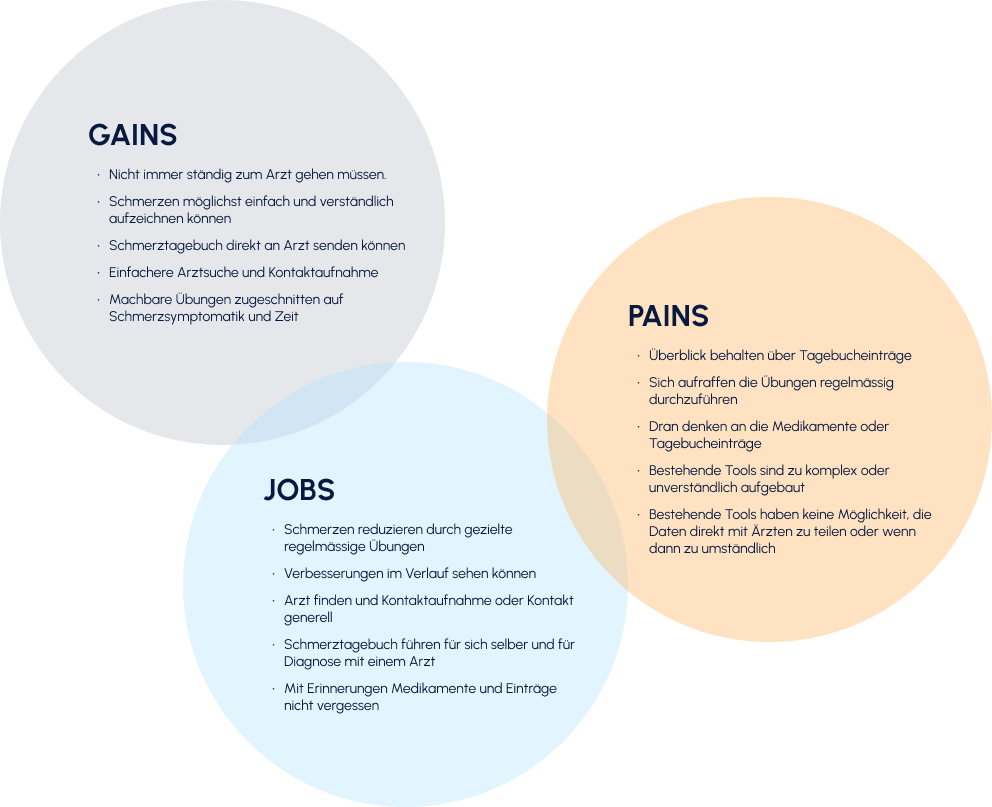
Zu den Benutzerprofilen
Zielgruppen-Personen
Mit Hilfe der definierten Zielgruppe und den Benutzerprofilen habe ich drei Zielgruppen-Personen kreiert, welche ideale User:innen der App darstellen.
Zu den Zielgruppen-Personen
Definition
Alle Zielgruppen-Personen waren sehr passend für die Lösung und Erarbeitung meiner App. Entschieden habe ich mich aber schlussendlich für Melina. Sie legt mehr Wert darauf, selbst Übungen machen zu können und schätzt den Austausch zu anderen Betroffenen. Zudem lässt sie sich mit der App vielleicht sogar überzeugen, eine ärztliche Fachperson aufzusuchen.
Definition
Problem
Immer mehr Menschen leiden unter chronischen Schmerzen sei es durch psychische Probleme, Stress, Probleme im sozialen Umfeld, Krankheiten oder andere Einflüsse.
Bedürfnis
User:innen möchten ihren Schmerzen ein Ende bereiten, wissen aber nicht wie. Sie möchten sich mit anderen Betroffenen austauschen können um sich selbst zu helfen. Sie möchten einen einfacheren Zugang zu ärztlichen Fachpersonen in der Schmerztherapie erhalten. Betroffene möchten auf eine einfache Art vermittelt bekommen, wie sie ihre Schmerzen lindern können.
Wie kann ich es User:innen ermöglichen, geeignete Therapiemöglichkeiten zu finden, ihre Schmerzen zu lindern und Lebensqualität zurückzugewinnen?
User Journey Map
Ich wollte mich besser in meine Zielgruppen-Person Melina hineinversetzen können. Was ihre Gedanken sind, von der Installation der App bis hin zu ersten Fortschritten in ihrer Schmerzsymptomatik. Die folgende User Journey Map zeigt auf, welche Handlungen und Emotionen Melina in ihrem Prozess mit der App hatte.
Zur User Journey Map
Ideation
Konzept der App
Die App soll allen Menschen, die unter chronischen Schmerzen leiden, neue Lebensqualität schenken. Sei es mit Übungen nach Schmerzregion, gegenseitiger Unterstützung in der Community oder einfacheres Finden von Schmerz-Spezialist:innen in ihrer Umgebung.
Dashboard
In der App soll eine Übersicht als Startscreen sein, um nicht zu lange suchen zu müssen. Auf dieser Übersicht findet sich auch ein Chat, um mit Schmerzspezialist:innen zu chatten und Tipps zu erhalten.
Medikamentenplan
Medikamente der User:in sollen in der App hinterlegt werden können, damit sie/er den Überblick behält, wie viele Medikamente noch da sind, aber auch um die Kontrolle über die Einnahmen zu behalten.
Schmerztagebuch
Schmerzen einfach und schnell tracken, um sie nachvollziehen zu können. Fortschritte werden so besser erkannt und können so auch in der Community geteilt werden.
Übungen
Die pro Schmerzregion definierten Übungen sollen unterstützend dienen, um die Schmerzen zu lindern oder ganz wegzubringen. Sie sollen nicht die ärztliche Fachperson ersetzen, jedoch denjenigen User:innen die selbst auch noch Übungen machen wollen helfen.
Community
Die Community soll dem Austausch zwischen Betroffenen dienen, wie auch die Betroffenen motivieren, ihre Fortschritte und Erkenntnisse zu teilen.
Ärztliche Fachpersonen finden
Durch die einfache Suchfunktion soll die Hemmschwelle zur ärztlichen Fachperson zu gehen überwunden werden. Die Suche ist nun viel leichter und wird direkt auf die ausgewählte Region der User:innen beschränkt.
Sitemap
In der Sitemap konkretisierte ich, welche Funktionen in der App beinhaltet sein sollen. Diese Struktur macht es leichter, mich dann an die Wireframes und Prototypen zu machen. Mit Hilfe der Sitemap werde ich nun auch noch User Flows und eine User Story Map anfertigen, um die App zu spezifizieren.
Zur Sitemap
User Story Map und User Flows
Das Ziel meiner User Story Map ist es, mir einen Überblick zu verschaffen über die Funktionen und Abläufe in der App. Um dies zu unterstützen erstellte ich noch einige User Flows um die Story Map etwas mehr spezifizieren zu können. Mit Hilfe dieser User Storys habe ich dann die User Story Map erarbeitet, welche der ablauforientierten Lösungsfindung dienen soll.
Zu den User Flows
Zur User Story Map
Design
Naming und Logo
Nach einem ausführlichen Brainstorming musste ich mich zwischen drei Namen entscheiden, die mir zugesagt hätten. Serenex, Dovivo und Naluu.
Ich entschied mich schlussendlich für den Namen Naluu und begann, einige Logoentwürfe zu erstellen. Naluu ist abgeleitet von valu (Schmerz auf Estnisch) und NEIN zu Schmerzen.
Design System
Meine Farbwahl ist beeinflusst durch die Farbwirkung der einzelnen Farben. Blau wirkt schmerzlindernd und beruhigend, da es eine sehr kühle Farbe ist. Das Orange stimuliert das Nervensystem und soll Emotionen wecken. Dies soll unter anderem beruhigend wirken wenn man beispielsweise unter Depressionen leidet.Qu.4
Der Punkt im Logo wird im Design aufgegriffen und soll den Schmerzpunkt widerspiegeln. Die Schriftwahl fiel bewusst auf eine rundere Schrift, da dies die Geschmeidigkeit widerspiegeln soll. Der Grundtext ist ebenfalls eine etwas rundere Schrift und läuft auf einer ähnlichen x-Höhe wie die Logo-Schrift, damit die Kombination harmonisch wirkt.
Die Buttons und der Footer sind ebenfalls etwas abgerundeter gehalten, einerseits um zu signalisieren dass es ein Button ist, andererseits um die Rundungen in den andern Elementen des Styleguides aufzugreifen.
Zum Design System
High-Fi User Testing
Da ich in meinem Zeitplan sehr gut vorangeschritten bin, entschied ich mich, ein zweites Testing durchzuführen, dieses mal mit dem High-Fi Prototypen.
Im User Testing stellte ich der Testperson folgende Aufgaben.
Erstelle ein neues Profil in der Applikation
Gehe auf dein Profil und füge ein neues Medikament hinzu
Erstelle einen neuen Eintrag in deinem Schmerztagebuch
Absolviere die Übungen von heute
Erstelle einen Beitrag in der Gruppe Rücken und lies die neusten Artikel zum Thema
Finde eine ärztliche Fachperson in deiner Umgebung, schau dir die Praxis an und nimm Kontakt auf
Führe deine Übungen des aktuellen Tages aus
Checke die Benachrichtigungen und chatte mit Spezialist:innen
Hinterlege deine ärztliche Fachperson und vereinbare einen Termin
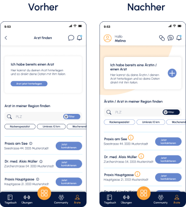
Fall 1
-
Header mit Schnellwahl
platziert
-
In gesamter App
geschlechtergerechtes Wording angewendet
-
Informationen über Praxis
prominenter platziert
-
Freundlicheres Erscheinungsbild
der App durch orange
Gestaltungselemente
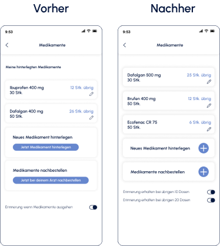
Fall 2
-
Medikamenteneintrag
optimiert
-
Medikamente auf Richtigkeit
mit einer Fachperson geprüft
-
System mit Boxen
überarbeitet
-
Mehrere Möglichkeiten
zur Erinnerung erstellt
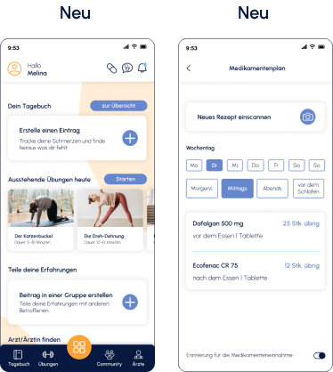
Fall 3
-
Medikamentenplan direkt
aufrufbar auf Dashboard
-
Schneller Überblick über
notwendige Einnahmen
pro Tag
-
Verhindern von
Fehldosierungen
Finale User Flows
Der finale Prototyp beinhaltet alle Bestandteile der App vom Onboarding bis hin zu den verschiedenen Features, wie die Suchfunktion um ärztliche Fachpersonen zu finden oder die Community.
Ich habe pro Themengebiet der App die wichtigsten fünf Seiten herausgenommen und zur Ansicht unten eingefügt. Dies zur besseren Übersicht über die einzelnen Seiten und Themen zusätzlich zu den Videos auf der Startseite.
Zur Übersicht der einzelnen Seiten
Zur App und den Funktionen